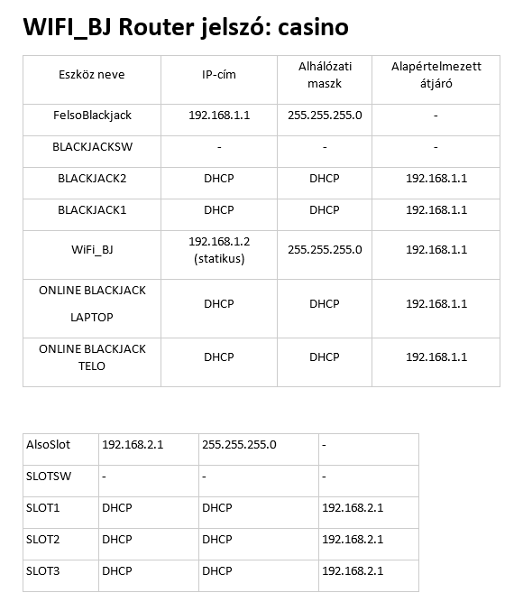

Projekt Áttekintése
Készítette: Hauber Benedek
Tantárgy: Hálózatok
Projekt Típus: Hálózati szimuláció
A Casino hálózat projekt egy komplex, multi-szintű hálózati infrastruktúra megtervezése és szimulációja a Packet Tracer szoftver segítségével. A projekt célja a gyakorlati hálózati ismeretek alkalmazása egy valósidejű szituációban.
Hálózati Topológia és Konfigurálás
Hálózat Felépítése
A casino hálózat hierarchikus felépítésű, mely biztosítja a szakosított szolgáltatások elérhetőségét és a hálózati forgalom hatékony irányítását.

- Központi szerver infrastruktúra
- Több szintű kapcsolási réteg
- Elosztott végpont hálózat
IP Címzés és Eszközök Konfigurációja
Az összes hálózati eszköz szignifikáns IP-sávokkal lett konfigurálva, az alábbi dokumentáció szerint:

- Alaphálózatok VLAN szegmentáció alapján
- Statikus IP-cím hozzárendelés kritikus eszközökhöz
- DHCP szegmentálás végpontok számára
- Routing protokollok konfigurálása
Projekt Jellemzői
- Szimuláció alapja: Cisco Packet Tracer
- Hálózati eszközök: Routerek, switchek, kliens eszközök
- Protokollok: TCP/IP, VLAN, DHCP,
Szimulációs Fájlok és Dokumentáció
🔗 Letölthető Fájlok
Packet Tracer Szimuláció:
⬇ casinohalozat.pkt letöltéseMegjegyzés: A fájl megnyitásához szükséges a Cisco Packet Tracer szoftver telepítése.
Projekt Dokumentáció:
📄 Dokumentáció letöltéseTeljes projektleírás, konfigurációs részletek és megjegyzések.